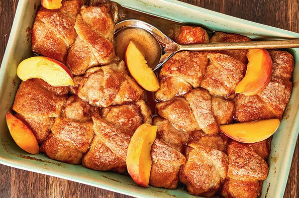

Country Peach Dumplings

For these country peach dumplings, we used fresh peaches to make them every bit as delicious as our country apple dumplings. Crescent roll dough, fresh peaches, and citrus soda are the key ingredients in this wonderful treat.
Ingredients
- 2 large fresh peaches, halved and pitted
- 2 (10 ounce) cans refrigerated crescent roll dough
- 1 cup butter
- 1 1/2 cups white sugar
- 1 teaspoon ground cinnamon
- 1 (12 fluid ounce) can or bottle citrus soda (such as Mountain Dew®)
Steps
- Preheat the oven to 350 degrees F (175 degrees C). Grease a 9x13-inch baking dish.
- Cut each peach half into 4 equal wedges; set aside.
- Separate crescent roll dough into triangles. Roll each peach wedge in crescent roll dough starting at the smallest end. Pinch to seal and place in the prepared baking dish.
- Melt butter in a small saucepan over low heat. Stir sugar and cinnamon into melted butter until combined. Pour over dumplings, followed by soda.
- Bake in the preheated oven until golden brown, 35 to 45 minutes.